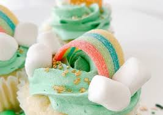

Rainbow Cupcakes

These colorful treats taste the same as normal cake but are more fun to eat! And they're perfect for kids and people of all ages.
Ingredients
- 2 ½ cups all-purpose flour
- 2 teaspoons baking powder
- ½ teaspoon baking soda
- ½ teaspoon salt
- ½ cup milk
- ½ cup vegetable oil
- 1 teaspoon vanilla extract
- 1 cup white sugar
- ½ cup butter
- 3 large eggs, room temperature
- red food coloring
- blue food coloring
- green food coloring
- yellow food coloring
Steps
Step1
- Preheat the oven to 350 degrees F (175 degrees C). Line two 12-cup muffin pans with paper baking cups.
step2
- Stir together flour, baking powder, baking soda, and salt in a large bowl. Whisk together milk, vegetable oil, and vanilla in a separate bowl until evenly blended; set aside.
step3
- Beat sugar and butter with an electric mixer in a large bowl until light and fluffy. The mixture should be noticeably lighter in color. Add eggs one at a time, allowing each egg to blend into the butter mixture before adding the next. Pour in the flour mixture alternately with the milk mixture, mixing until just incorporated.
step4
- Divide cake batter into four separate bowls. Add a few drops of food coloring into one bowl of batter and stir; add more food coloring if necessary to reach the desired shade. Repeat with remaining colors and bowls of batter.
step5
- Using a different spoon for each color batter, spoon a small portion of each color into the cupcake liners, until 1/2 to 3/4 full. Do not mix the batter once it is in the cupcake liner.
step6
- Bake in the preheated oven until a toothpick inserted into a cupcake comes clean, 15 to 20 minutes.